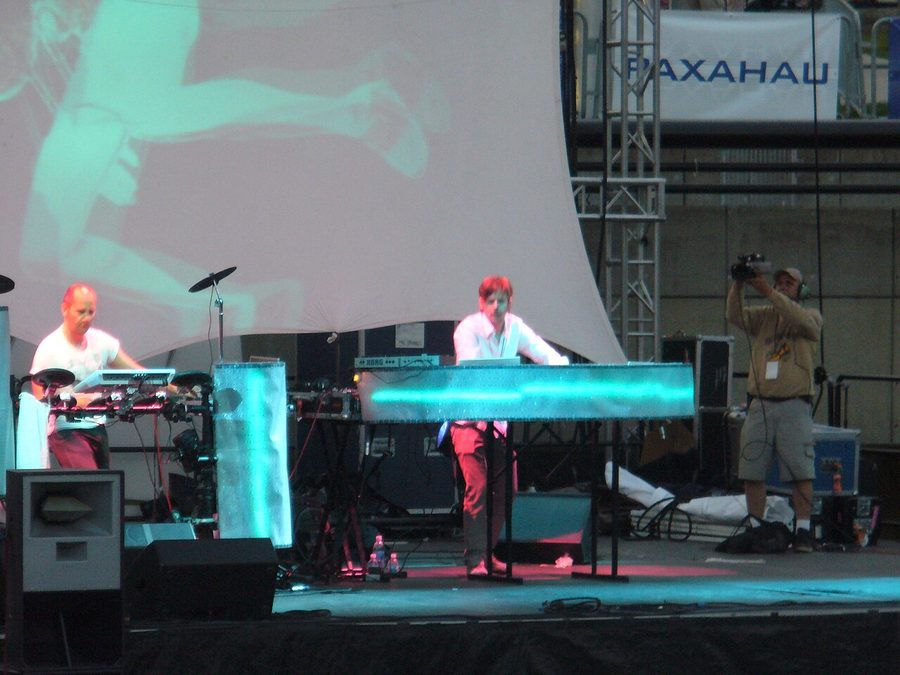

ITM Exclusive: Booka Shade & Carl Cox for Stereosonic



Earlier in the year ITM reported that live electronic favourite Booka Shade had promised they’d be back in Australia before the end of the year. Well, the boys from Berlin are good on their word because they’ve been confirmed as one of the headline acts for the upcoming Stereosonic national festival tour later this year, along with Aussie regular Carl Cox and the previously announced Paul van Dyk. It’s been confirmed the festival will be visiting Sydney, Melbourne, Brisbane, Adelaide and Perth, with another 20+ international acts still to be announced.
Speaking exclusively with ITM, Hardware leader Richie McNeill said they’ve looked beyond the obvious choices when deciding upon venues for Stereosonic. “We’re interested in using new venues in each city, rather than going with the usual choices like the Myer Music Bowl [Melbourne], Hordern Pavilion [Sydney] or Riverstage [Brisbane]. And that’s the reason we decided to go with the Melbourne Showgrounds as the space to debut Sterosonic last year,” he told ITM. “In each city we’ve looked at four or five new spaces that haven’t been utilised before, and we’ve come up with some really interesting choices. We’re trying to present a different kind of festival, with a different kind of lineup.”
Stereosonic will be returning to the Showgrounds in Melbourne this year, but they’ll be utilising a brand new space in both Perth and Adelaide, as well as relatively new venues in Sydney and Brisbane. Hardware has also confirmed it will be working with the Sunset Events team for the Perth show, responsible for the Southbound and Blues n’ Roots festivals, as well as Electric Circus and Eclipse in Adelaide and the team from Family Nightclub for Brisbane. Hardware will continue its relationship with Onelove, who will be a national partner for the festival, as well as working with several local Sydney promoters that will be revealed shortly.
We can also look forward to further similar tours from the Hardware crew in the near future. Richie McNeill revealed to ITM that they would be debuting another national festival in 2009; a new local brand in the vein of Stereosonic.
Stay tunes to ITM for further details on the Stereosonic national tour! Full lineup and national dates to be revealed shortly.